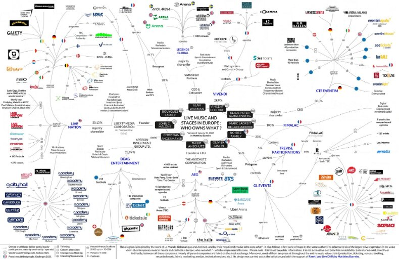
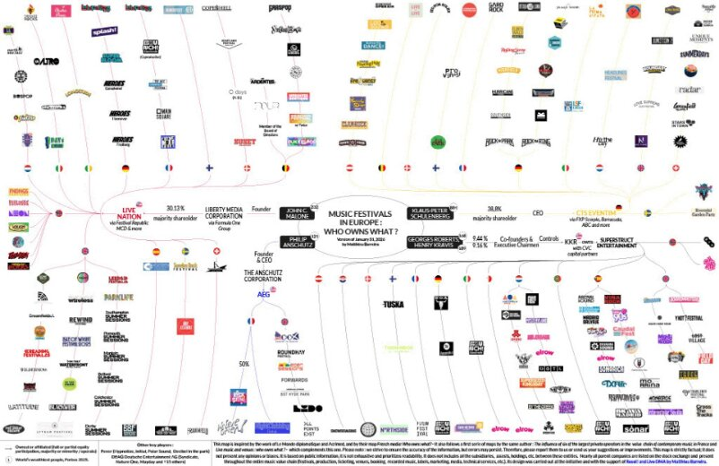
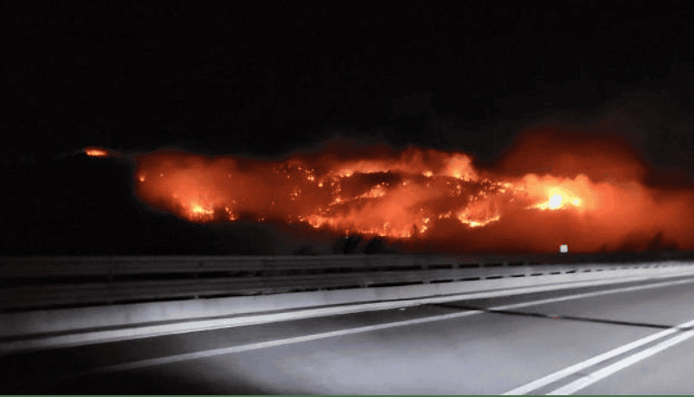
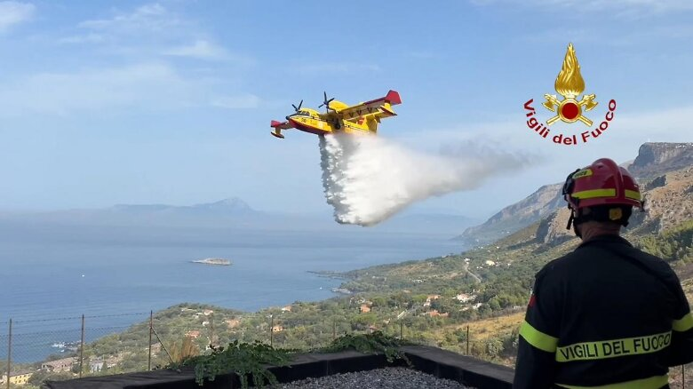

È capitato a tutti gli appassionati di musica di volere partecipare a dei festival e di fare la dura scelta di decidere quanto budget investire, quanti soldi consumare in loco e, al di fuori del divertimento, quanto fosse giusto supportare quell'organizzazione.
Purtroppo viviamo in tempi dove anche i grandi investitori sono entrati a piedi pari nelle realtà che sono sempre state simbolo di indipendenza e di grande rappresentazione musicale e di libertà.

Noto che spesso anche le realtà che si specializzano in eventi settoriali e con una buona attitudine artistica, alla fine della fiera non supportano mai il territorio che li ospita.
Di solito questa pratica prende forma in due dimensioni: il non supporto delle realtà culturali locali, e quello che diventa poi lo sfruttamento del territorio da parte di realtà esterne.
Spesso oasi naturali diventano spazio per persone che giustamente scelgono di supportare quella specifica attività; ma una cosa che ho sempre notato e che mi lascia perplesso è come questa "occupazione" territoriale non coinvolga le persone che effettivamente vivono e investono energia in quei territori.
Bensì, molto spesso, danno spazio a collettivi che ben poco hanno a che fare con il territorio, anzi che alla fine lo strumentalizzano con la classica scusa di creare economie per le attività residenti in loco.

Credo che uno dei grandi errori concettuali sia proprio questo: il supporto economico delle realtà locali è di per sé un bene — nessuno critica questa risorsa — ma è palese che il non tenere in considerazione la proposta culturale del luogo sia una sconfitta già in partenza.
Noto molti festival che si sviluppano in montagna, spesso anche quando la montagna bruciava fino a pochi giorni prima. Sapendo che i loro fondi e la loro cura non andranno a salvarla.

Spesso anche quando ci si nasconde dietro una valida proposta artistica, in luoghi che diventano teatri di performance uniche, sia per location che per performance.
Alla fine è davvero riduttivo non impegnarsi per lo sviluppo di formule economiche che non considerano l'arte, ma che prendono parte in territori esclusivamente per la loro bellezza, senza dare supporto a chi in quel posto ci vive e deve combattere contro la difficoltà di potersi esprimere sinceramente.
L'Italia è la patria della mentalità provinciale, e spesso ci hanno insegnato che il provincialismo sia come un cancro impossibile da sconfiggere; solo poche realtà che ho avuto modo di conoscere sono davvero disposte a fare l'investimento più importante:
quello di diventare una vera risorsa culturale per la gente del territorio, non solo per le casse dell'organizzazione.
Reputo indispensabile andare contro la dinamica mangia-tutto dei festival che diventano per persone cool e radical chic, dove la considerazione della location diventa meno importante di una botta di ket.
"Come cambiamo il ragionamento della 'pancia' se alla fine si creano solo delle realtà che alimentano il sistema per i finti intellettualoidi? Come possiamo gestire il provincialismo volgare, se non esaltiamo il provincialismo positivo e la purezza che dà significato ai collettivi che ogni giorno provano a battersi per fare cultura in territori sterili? Come facciamo ad andare contro questo meccanismo capitalistico/culturale del divorare musica e cultura e di mantenerla solo per quella faccia 'elitaria' che può permettersi questo sfizio?"
Finché la rappresentanza delle realtà locali non sarà pienamente inserita nella programmazione della maggior parte dei festival, si resterà sempre a quella modalità mordi-e-fuggi che è proprio quella che ci insegna il capitalismo: l'usare e il prendere cose che per altri hanno un gran valore, usando la scusa che si apporti aumento di capitale.
Ma qual è il vero prezzo per le realtà culturali locali che si vedono espropriare il loro sviluppo e restano a osservare solo questo grande uso della tecnica, così vicina a loro ma che alla fine resta così lontana?

Ditemi cosa ne pensate: voglio creare un dibattito aperto e positivo, sempre pronto a criticare buona parte delle dinamiche intorno a me.
Non per soddisfare la mia voglia di rompere le scatole gratuitamente, ma per capire se c'è qualcuno che riesce ancora a farsi delle domande un po' scomode, per vedere se queste sono critiche giuste o solo pensieri passeggeri.
Spero di ricevere feedback sinceri su questo tema. Vorrei aprire questa rubrica su Interferencesmag insieme a chi crede che occuparsi di questi temi sia necessario in questo periodo ricco di controsensi.